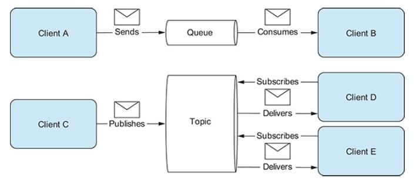
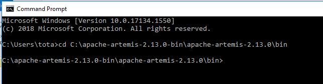
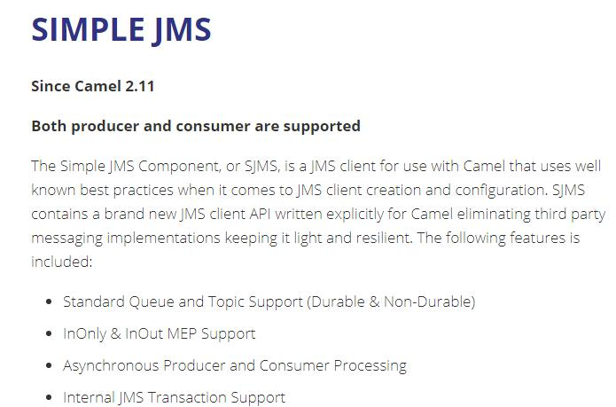

ΕΝΟΤΗΤΑ 2 APACHE CAMEL - SENDING MESSAGES TO A BROKER
Στο σημερινό δωρεάν μάθημα Apache Camel θα δούμε πως μπορούμε να στέλνουμε μηνύματα σε ένα broker. Πριν δούμε όμως τα βήματα δημιουργίας ενός τέτοιου project θα πρέπει πρώτα να εξηγήσουμε τι είναι ένα message, ποιος είναι ο ρόλος του CamelContext, και πως χρησιμοποιούμε το δύο components Sjms και direct. Ας ξεκινήσουμε λοιπόν.
Τα μηνύματα είναι οι οντότητες που χρησιμοποιούνται από τα συστήματα για να επικοινωνούν μεταξύ τους δια μέσω καναλιών επικοινωνίας. Τα μηνύματα ρέουν προς μια κατεύθυνση – από έναν αποστολέα σε έναν παραλήπτη.
Τα μηνύματα περιέχουν body (payload), headers, και optional attachments/properties.
Headers and Attachment – Τα headers είναι τιμές που σχετίζονται με το μήνυμα όπως αναγνωριστικά αποστολέα, κωδικοποίηση περιεχομένου, πληροφορίες ελέγχου ταυτότητας και ούτω καθεξής. Τα headers ορίζονται από το ζεύγος όνομα-τιμή. Το όνομα είναι μια μοναδική σειρά από χαρακτήρες και σύμβολα χωρίς διάκριση πεζών-κεφαλαίων ενώ η τιμή είναι τύπου java.lang.Object. Δεν υπάρχει περιορισμός στο μέγεθος των headers ούτε στο αριθμό των headers που περιλαμβάνονται σε ένα μήνυμα. Τέλος, τα headers αποθηκεύονται σαν map structures μέσα στο μήνυμα. Επίσης τα μηνύματα μπορεί να περιέχουν και συνημμένες πληροφορίες. Αυτά είναι προαιρετικά συνημμένα τα οποία χρησιμοποιούνται συνήθως για web services και για emails.
Body – Το κύριο μέρος του μηνύματος, αυτό που βασικά περιέχει την πληροφορία που θέλουμε να μεταφέρουμε, είναι είδος java.lang.Object. Αυτό μας δίνει την δυνατότητα να αποθηκεύουμε οποιοδήποτε μέγεθος και είδος περιεχομένου. Είναι ευθύνη του receiver και του software engineer να κατανοήσει το μήνυμα που λαμβάνει. Όμως, χρησιμοποιώντας το Camel, έχουμε αποκτήσει ένα σημαντικό πλεονέκτημα όσο αφορά την μορφή (format) των μηνυμάτων. Το Camel περιέχει μηχανισμούς για την μετατροπή των δεδομένων σε αποδεκτή μορφή που σε πολλές περιπτώσεις η μετατροπή συμβαίνει αυτόματα.
Fault Flag – Τα μηνύματα περιλαμβάνουν επίσης ένα fault flag σε περίπτωση που το μήνυμα μας είτε γιατί δεν στάλθηκε σωστά είτε γιατί δεν το λάβαμε σωστά. Γενικότερα όμως τα fault flags δεν τα διαχειρίζεται η integration πλατφόρμα. Αυτά πρέπει να τα διαχειριστούμε σε επίπεδο εφαρμογής.
Σε μελλοντικές ενότητες θα μιλήσουμε και για το container μέσα στο οποίο λειτουργούν όλα τα μηνύματα και ονομάζεται exchange. Για τώρα δεν χρειάζεται να εμβαθύνουμε τόσο στην τεχνολογία διαχείρισης μηνυμάτων από το Camel.
Εκείνο που ενώνει όλα τα κομμάτια μαζί και γνωρίζει τα πάντα όταν τρέχει το Apache Camel είναι το CamelContext. Είναι ο συντονιστής όλων των routes, γνωρίζει όλα τα Components και γενικότερα είναι ο κεντρικός μηχανισμός στον οποίο στηρίζεται η λειτουργία του Apache Camel.
Για να μπορέσει να λειτουργήσει ένα καινούργιο component θα πρέπει να το γνωρίζει το CamelContext. Έχουμε δημιουργήσει ένα component εμείς τότε θα πρέπει να το δηλώσουμε στο CamelContext για να μπορέσει να το διαχειριστεί σωστά κατά την εκτέλεση ενός route. Στο δικό μας παράδειγμα, θα χρειαστεί να δηλώσουμε το jms component που θα δημιουργήσουμε στο CamelContext. Αυτό θα το δούμε σε λίγο όταν αρχίζουμε να χτίζουμε το project μας. Μας μένει όμως να μιλήσουμε για τα Queues και τα Topics.
Στο παράδειγμα μας, θα διαβάζουμε ένα αρχείο από έναν φάκελο και το περιεχόμενο του αρχείου θα το στέλνουμε σαν μήνυμα σε ένα JMS endpoint το οποίο στην ουσία είναι ένα εξωτερικός message broker.
Υπάρχουν πολλοί, αξιόλογοί και δωρεάν brokers που υπάρχουν για να χρησιμοποιηθούν για επαγγελματική χρήση. Μερικοί από αυτοί σίγουρα θα σας είναι γνωστοί όπως Kafka, RabbitMQ, ActiveMQ και ArtemisMQ. Τι μας προσφέρει όμως ένας broker?
Όταν ένα σύστημα θέλει να στείλει μήνυμα σε ένα άλλο σύστημα αυτό επιτυγχάνεται με ένα ενδιάμεσο σύστημα που ονομάζεται broker. Στην ουσία στέλνουμε το μήνυμα μας στον broker και οποιαδήποτε στιγμή ή και στιγμιαία μπορεί το άλλο σύστημα να διαβάσει το μήνυμα που του στείλαμε και να αρχίσει μια δική του διεργασία. Το πλεονέκτημα που αποκτούμε χρησιμοποιώντας ένα ενδιάμεσο σύστημα διαχείρισης μηνυμάτων είναι ότι μπορούμε να έχουμε ασύγχρονη επικοινωνία (asynchronous). Που όμως αποθηκεύονται τα μηνύματα στον broker?
Εδώ έχουμε δύο επιλογές- Queues και Topics. Τα Queues είναι αυτό που ονομάζουμε point-to-point που σημαίνει ότι κάθε μήνυμα που στέλνουμε θα έχει μόνο έναν παραλήπτη και από την στιγμή που θα διαβαστεί από αυτόν δεν είναι διαθέσιμο για άλλον. Τα Topics όμως ακολουθούν το publish/subscribe μοντέλο που σημαίνει ότι ένα μήνυμα μπορεί να έχει πολλούς παραλήπτες αρκεί αυτοί να έχουν ήδη κάνει εγγραφή στο Topic.
Το service το οποίο χρησιμοποιούμε για να δημιουργήσουμε, να στείλουμε, να λάβουμε και να διαβάσουμε μηνύματα είναι το Java Message Service (JMS) Το ίδιο service μας παρέχει την δυνατότητα μέσω του ConnectionFactory να μπορούμε να ενωθούμε σε έναν broker και να στείλουμε ή να λάβουμε μηνύματα. Νομίζω ότι είμαστε έτοιμοι με αυτή την λίγη και απλή θεωρία που καλύψαμε να δημιουργήσουμε το project μας.
Για αρχή θα πρέπει να επιλέξουμε και να εγκαταστήσουμε έναν broker. Στο δικό μας παράδειγμα θα χρησιμοποιήσουμε το ArtemisMQ (https://activemq.apache.org/components/artemis/ ) . Είναι η συνέχεια του ActiveMQ που πολλοί application servers είχαν ενσωματωμένο. Το ArtemisMQ είναι η νέα επιλογή broker της Jboss για τους Application Server όπως ο Wildfly.
Φυσικά το πρόγραμμα μας, αν φορτώσετε τις σωστές βιβλιοθήκες στο POM.xml αρχείο θα μπορεί να στείλει μηνύματα και σε άλλους brokers όπως Kafka. Αυτό θα το δείξουμε σε μελλοντικές ενότητες. Για αρχή θα πρέπει πρώτα να δούμε πως δημιουργούμε στο Camel ένα route που στέλνει μηνύματα σε έναν broker.
Αν έχετε Windows 10 λειτουργικό τότε η επιλογή σας είναι το zip αρχείο. Αφού κατεβάσετε το ArtemisMQ, αποσυμπιέστε το μέσα σε έναν φάκελλο. Πηγαίνετε μέσα στο φάκελλο του bin κάντε copy το path.
Τώρα θα πρέπει να ανοίξετε ένα cmd terminal και να κάνετε paste το path που αντιγράψατε.
Το τελευταίο βήμα είναι να δημιουργήσουμε ένα δικό μας broker. Οπότε στο terminal γράφετε την εντολή artemis create mybroker και πατάτε enter. Δώστε ένα username και password, δεχτείτε την επιλογή που επιτρέπει anonymous access και περιμένετε λίγα δευτερόλεπτα για να ολοκληρωθεί η διαδικασία.
Ένα καινούργιο broker service με το όνομα mybroker έχει δημιουργηθεί μέσα στο φάκελλο bin. Μπορούμε να ξεκινήσουμε το mybroker που μόλις δημιουργήσαμε από το cmd terminal. Πηγαίνουμε μέσα στο φάκελλο mybroker, μετά στο φάκελλο bin και τρέχουμε την εντολή artemis.cmd run.
Μέτα από λίγα δευτερόλεπτα θα έχει ολοκληρωθεί η εκκίνηση του broker.
Κάθε φορά λοιπόν που χρειάζεστε να το ξεκινήσετε, θα πρέπει να ανοίγετε ένα cmd terminal και αφού πάτε στο bin φάκελλο του mybroker να τρέχετε την εντολή artemis.cmd run. Για να σταματήσετε τον broker απλά πατήστε Ctrl + C.
Τώρα που ο broker έχει δημιουργηθεί μπορούμε να έχουμε πρόσβαση στα μηνύματα που περιέχει μέσω μιας κονσόλας που μας παρέχει. Αν δείτε στο terminal, η τελευταία γραμμή μας πληροφορεί ότι η κονσόλα είναι διαθέσιμη στο http://localhost:8161/console.
Ανοίγετε λοιπόν έναν browser και αφού γράψετε την διεύθυνση και εισάγετε το username και password θα πρέπει να σας εμφανιστεί η παρακάτω κονσόλα.

Αφήστε ανοιχτή αυτή την κονσόλα. Όταν ενωθούμε σωστά με το ArtemisMQ και στείλουμε ένα μήνυμα με το Apache Camel θα μπορέσουμε να δούμε από εδώ το Queue που δημιουργήθηκε όπως και το μήνυμα που περιέχει. Ο broker λοιπόν είναι έτοιμος. Τώρα πρέπει να δημιουργήσουμε το project με το οποίο θα στείλουμε μήνυμα στον broker.
Σας προτείνω, για ευκολία χρόνου και κόπου, να μην δημιουργήσετε ένα project από την αρχή αλλά να αντιγράψετε το project που είχαμε δημιουργήσει στην πρώτη ενότητα. Αν θέλετε να το δημιουργήσετε από την αρχή, τότε ακολουθήστε όλα τα βήματα της ΕΝΟΤΗΤΑΣ 1 .
Για να μπορέσουμε να στείλουμε μηνύματα θα πρέπει πρώτα να επιλέξουμε με ποιο component θα το κάνουμε. Επειδή το Apache Camel συνηθίζει να δημιουργεί καινούργια components σε τακτά χρονικά διαστήματα, θα πρέπει να ελέγχουμε το documention για να είμαστε ενημερωμένοι. Αν και έχουμε αρκετές επιλογές για το project μας θα επιλέξουμε το Simple JMS (https://camel.apache.org/components/latest/sjms-component.html ) .
Μπορείτε κάλλιστα να χρησιμοποιήσετε το simple JMS2. Το αποτέλεσμα είναι ακριβώς το ίδιο, απλά αλλάζει το dependency στο POM.xml αρχείο.
Εκτός από το Simple JMS θα χρειαστούμε ακόμα ένα component που ονομάζεται direct (https://camel.apache.org/components/latest/direct-component.html ) . Αυτό το component μας είναι χρήσιμο όταν θέλουμε να ενώσουμε δύο διαφορετικά routes σε ένα, όπως δείχνει και το παράδειγμα από το documentation του Camel.
Πρέπει λοιπόν να προσθέσουμε κάποια dependencies στο POM.xml αρχείο έτσι ώστε να αναγνωρίσει σωστά το Apache Camel τον κώδικα μας. Το καινούργιο POM.xml θα είναι ως εξής:
POM.xml
<?xml version="1.0" encoding="UTF-8"?> <project xsi:schemaLocation="http://maven.apache.org/POM/4.0.0 http://maven.apache.org/xsd/maven-4.0.0.xsd" xmlns="http://maven.apache.org/POM/4.0.0" xmlns:xsi="http://www.w3.org/2001/XMLSchema-instance"> <modelVersion>4.0.0</modelVersion> <groupId>com.example</groupId> <artifactId>SimpleJMS</artifactId> <version>1.0-SNAPSHOT</version> <packaging>war</packaging> <dependencyManagement> <dependencies> <dependency> <groupId>org.apache.camel</groupId> <artifactId>camel-bom</artifactId> <version>3.4.0</version> <type>pom</type> <scope>import</scope> </dependency> </dependencies> </dependencyManagement> <properties> <maven.compiler.target>1.8</maven.compiler.target> <failOnMissingWebXml>false</failOnMissingWebXml> <maven.compiler.source>1.8</maven.compiler.source> <tomee.version>8.0.3</tomee.version> <final.name>FileCopy</final.name> </properties> <dependencies> <dependency> <groupId>org.eclipse.microprofile</groupId> <artifactId>microprofile</artifactId> <version>2.1</version> <type>pom</type> <scope>provided</scope> </dependency> <dependency> <groupId>jakarta.enterprise</groupId> <artifactId>jakarta.enterprise.cdi-api</artifactId> <version>2.0.2</version> <scope>provided</scope> </dependency> <dependency> <groupId>org.apache.camel</groupId> <artifactId>camel-cdi</artifactId> <version>3.4.0</version> </dependency> <dependency> <groupId>org.apache.camel</groupId> <artifactId>camel-context</artifactId> <version>2.25.1</version> </dependency> <dependency> <groupId>org.apache.camel</groupId> <artifactId>camel-core</artifactId> <version>3.4.0</version> </dependency> <dependency> <groupId>org.apache.camel</groupId> <artifactId>camel-direct</artifactId> <version>3.4.0</version> </dependency> <dependency> <groupId>org.apache.camel</groupId> <artifactId>camel-sjms</artifactId> <version>3.4.0</version> </dependency> <dependency> <groupId>org.apache.activemq</groupId> <artifactId>artemis-jms-client</artifactId> <version>2.13.0</version> </dependency> </dependencies> <build> <finalName>FileCopy</finalName> </build> <profiles> <profile> <id>tomee</id> <activation> <activeByDefault>true</activeByDefault> </activation> <build> <plugins> <plugin> <groupId>org.apache.tomee.maven</groupId> <artifactId>tomee-maven-plugin</artifactId> <version>${tomee.version}</version> <executions> <execution> <id>executable-jar</id> <phase>package</phase> <goals> <goal>exec</goal> </goals> </execution> </executions> <configuration> <context>ROOT</context> <tomeeClassifier>microprofile</tomeeClassifier> <tomeeHttpPort>8080</tomeeHttpPort> <tomeeShutdownPort>8005</tomeeShutdownPort> <tomeeAjpPort>8009</tomeeAjpPort> </configuration> </plugin> </plugins> </build> </profile> </profiles> <name>SimpleJMS</name> </project>
Η κλάση μας MyRouteBuilder.java αποτελείται από τον εξής κώδικα:
MyRouteBuilder.java
package com.example.SimpleJMS; import javax.inject.Inject; import org.apache.activemq.artemis.jms.client.ActiveMQConnectionFactory; import org.apache.camel.CamelContext; import org.apache.camel.builder.RouteBuilder; import org.apache.camel.component.sjms.SjmsComponent; public class MyRouteBuilder extends RouteBuilder { @Inject private CamelContext camel; SjmsComponent component = new SjmsComponent(); @Override public void configure() { component.setConnectionFactory(new ActiveMQConnectionFactory("tcp://localhost:61616")); camel.addComponent("sjms", component); from("file:C:\\testdata1").to("direct:start"); from("file:C:\\testdata2").to("direct:start"); from("direct:start").to("sjms:queue:myqueue"); } }
Ας δούμε λοιπόν τι ακριβώς προσπαθούμε να κάνουμε με αυτό τον απλό κώδικα.
Για αρχή, θα χρειαστούμε να κάνουμε inject ένα αντικείμενο CamelContext. Όπως έχουμε πει ήδη στην θεωρία μας, το CamelContext είναι αυτό που ενώνει όλα τα components μαζί και βάζει σε λειτουργία τα routes. Το camel αντικείμενο θα το χρειαστούμε λίγο αργότερα στον κώδικα.
Αμέσως μετά δημιουργούμε ένα αντικείμενο είδος SjmsComponent και το ονομάζουμε component. Αυτό είναι το component που επιλέξαμε για να ενωθούμε. Όμως δεν γνωρίζει που ακριβώς θα πρέπει να στείλει το μήνυμα. Για αυτό λοιπόν χρησιμοποιούμε την setConnectionFactory μέθοδο και ορίζουμε ότι θα δημιουργήσουμε ένα καινούργιο connection στο ArtemisMQ ( αυτό γίνεται με το new ActiveMQConnectionFactory) στην διεύθυνση tcp://localhost:61616. Η πόρτα 61616 είναι η standard πόρτα με την οποία επικοινωνεί το ArtemisMQ.
Μέσα στον κώδικα μας θα πρέπει να καλέσουμε τώρα αυτό το νέο SjmsComponent που δημιουργήσαμε και ρυθμίσαμε. Για να το καλέσουμε θα πρέπει να του δώσουμε ένα όνομα. Ταυτόχρονα θα πρέπει να το γνωρίζει και το ίδιο το Camel για να μπορεί να το χρησιμοποιήσει. Εδώ λοιπόν είναι που χρειαζόμαστε το camel αντικείμενο που κάναμε inject στην αρχή του κώδικα. Δηλώνουμε λοιπόν το component με όνομα sjms στο ContextCamel.
Είμαστε έτοιμοι να δημιουργήσουμε τα routes. Για να δείξουμε την χρησιμότητα του direct component δημιούργησα τρία routes. Τα δύο πρώτα διαβάζουν ένα αρχείο από τους φακέλλους testdata1 και testdata2 αντίστοιχα και στέλνουν τα δεδομένα τους σε ένα direct endpoint που ονομάζεται start. Στην ουσία και τα δύο routes στέλνουν τα δεδομένα τους σε ένα κοινό endpoint.
Το τρίτο route ορίζει τον consumer, δηλαδή ορίζει το endpoint που τα άλλα δύο στέλνουν τα δεδομένα τους. Θα πρέπει το όνομα να είναι ακριβώς το ίδιο. Το direct endpoint λειτουργεί με σύγχρονη (synchronous) επικοινωνία οπότε δεν υπάρχει καθυστέρηση από το ένα route στο άλλο.
Αφού λοιπόν το direct component δεχτεί τα δεδομένα, τα στέλνει στο sjms component. Επίσης, ορίζουμε ότι θα δημιουργηθεί και ένα καινούργιο queue στον broker με το όνομα myqueue σε περίπτωση που δεν υπάρχει ήδη. Επειδή ορίσαμε σωστά το connection με το broker και το δηλώσαμε στο CamelContext τότε το route θα στείλει το μήνυμα στο ArtemisMQ και μάλιστα θα δημιουργήσει ένα καινούργιο queue με το όνομα myqueue.
Αφού κάνετε mvn clean install στο project, τρέξτε την εντολή mvn tomee:run για να ξεκινήσει ο tomee. Όταν είναι έτοιμος ο application server, δημιουργήστε ένα απλό txt αρχείο το οποίο περιέχει μέσα το όνομα σας, και τοποθετήστε στο testdata1 (ή testdata2).
Αν πάμε τώρα στην κονσόλα του ArtemisMQ θα δούμε ότι έχει δημιουργηθεί ένα καινούργιο queue με το όνομα myqueue. Αν ανοίξετε το myqueue, αριστερά θα σας εμφανιστεί μια λίστα με όλα τα μηνύματα. Πατώντας επάνω στο message ID αριθμό μπορείτε να δείτε το περιεχόμενο του μηνύματος.